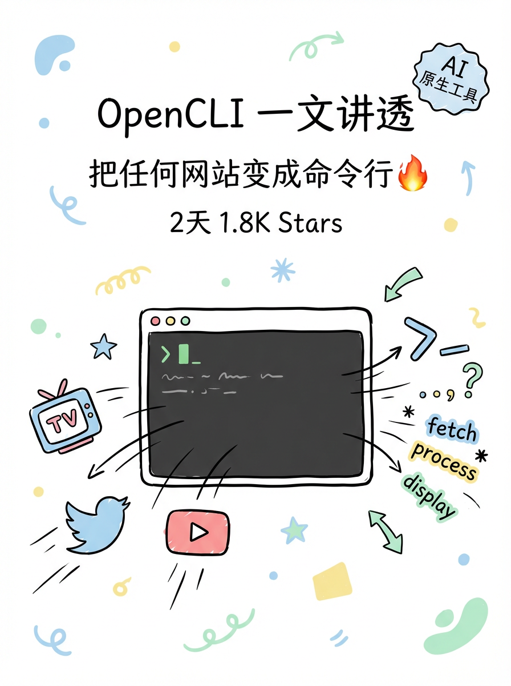
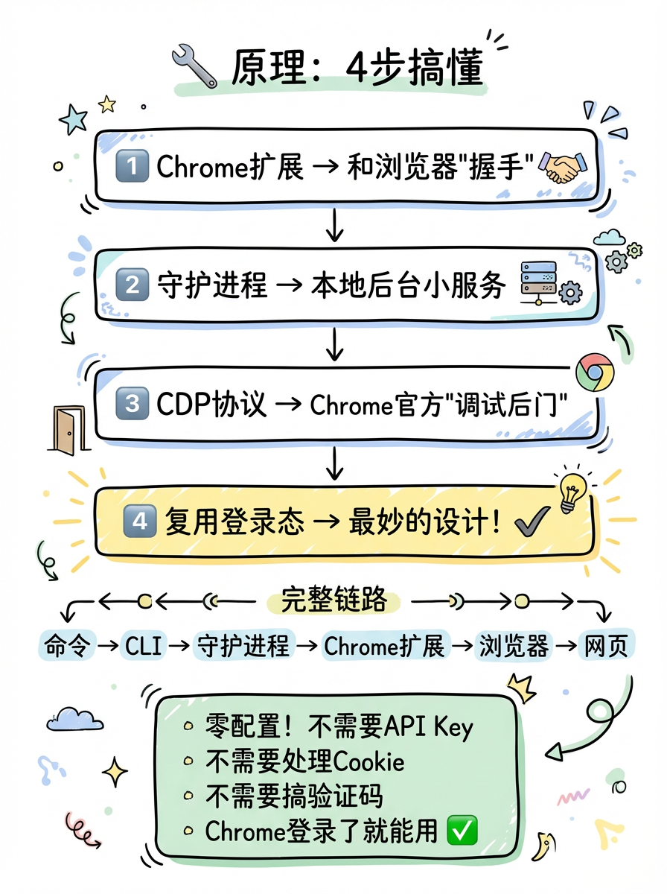
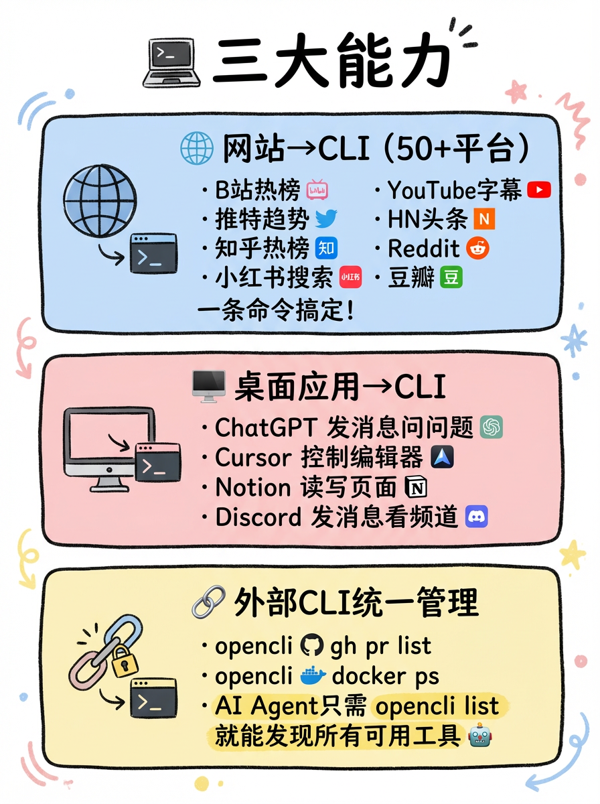
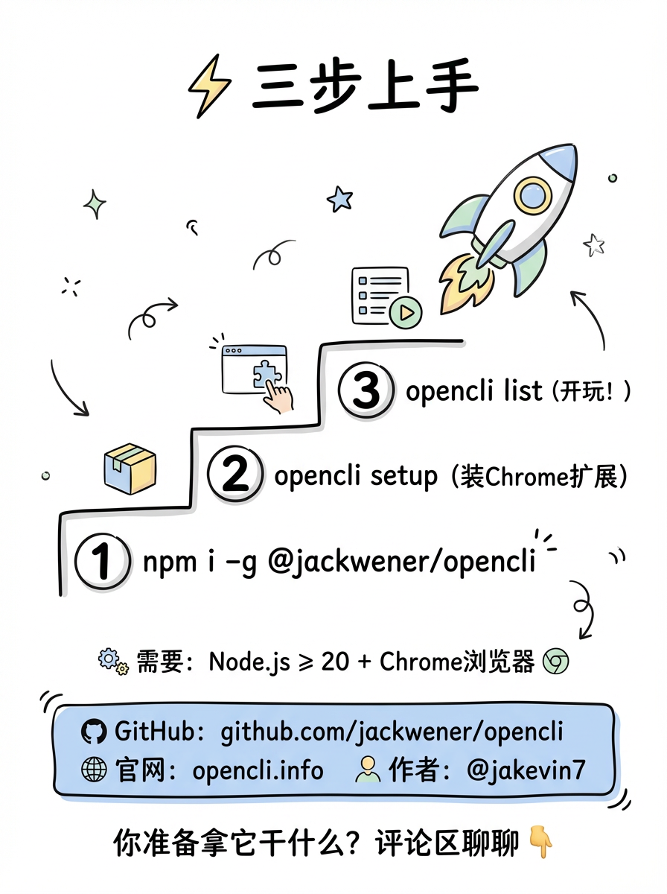
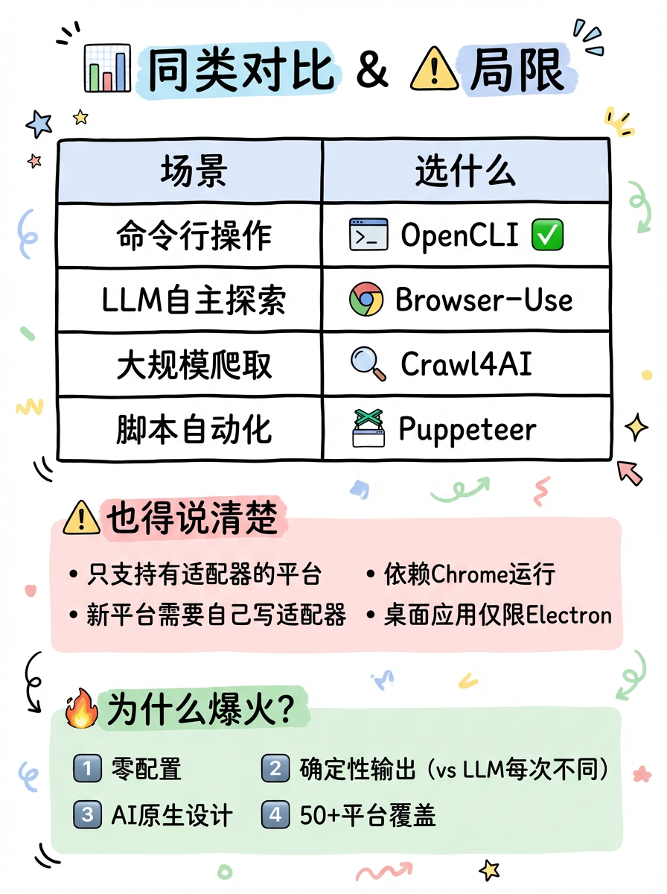

微信视频号
数据抓取与持久化
实战指南
利用 OpenCLI 的 Browser Bridge 插件 + Trae AI IDE，以 UI 自动化方式优雅、稳定地实现微信视频号数据全量抓取与数据库持久化，并突破性地实现基于评论关键字的自动回复功能。
整体架构
从 CLI 命令到数据库持久化，五大模块协同工作的完整链路
CLI 框架 + 注册命令
Chrome 扩展 + CDP 协议
page.evaluate + 模拟点击
视频统计 + 评论列表映射
utf8mb4 持久化入库
遍历评论 → 关键字匹配 → scrollIntoView → dispatchEvent → 原型链注入 → 发送
执行流程
数据在每一步如何流转，从页面抓取到最终入库的完整数据流
真正懂代码的 AI 智能 IDE
在整个开发过程中，并没有离开编辑器去到处查阅文档或手动调试，因为有了 Trae
从"辅助补全"到"结对编程"
传统的 IDE（如 VSCode 或 WebStorm）加上 Copilot 插件，主要是你在写代码时它帮你补全几行片段。而 Trae 是一个以 AI 为核心引擎的开发环境。
你只需要用自然语言说出你的意图，例如：
"我想抓取视频的封面和评论人的头像，完善一下，并存入 10.1.28.16 的 MySQL"
Trae 就会自主阅读当前项目上下文、分析报错、规划任务步骤、编写完整的业务代码，甚至主动帮你运行终端命令安装缺失的 npm 依赖（如 mysql2）、编译文件并验证运行结果。
🧠 Trae 核心能力
-
🎯
自然语言驱动开发 — 用中文描述需求，AI 自主生成完整代码
-
🔍
全自动环境排错 (Self-Healing) — 直接阅读截图中的报错日志，主动排查源码并修复
-
📦
智能依赖管理 — 自动检测缺失依赖，在终端执行安装命令
-
🚀
端到端验证 — 编写代码后自动编译、运行并验证结果
-
🌐
浏览器探索驱动开发 — 控制浏览器打开页面，找到元素、测试点击效果，将逻辑固化为脚本
💡 实战案例：Trae 自主排错
当在新电脑上部署遇到 error: unknown command 'channels'，或者写入数据库时遇到 TypeError: Unknown charset 'utf8mb3' 的深层字符集崩溃时，Trae 能够通过直接阅读截图中的报错日志，主动在内置终端里执行命令去排查 OpenCLI 的底层源码（比如查看 discovery.js 了解动态加载机制），并迅速给出最专业的解决方案。
OpenCLI 素材展示
五张核心素材图，全面展示 OpenCLI 的能力、原理、上手方式和竞品对比

OpenCLI 一文讲透
把任何网站变成命令行 — 2天 1.8K Stars 的 AI 原生工具

原理：4步搞懂
Chrome扩展 → 守护进程 → CDP协议 → 复用登录态，零配置的完整链路

三大核心能力
网站→CLI (50+平台)、桌面应用→CLI、外部CLI统一管理

三步快速上手
npm install → opencli setup → opencli list，开箱即用

同类对比 & 局限性
与 Browser-Use、Crawl4AI、Puppeteer 的场景对比，以及诚实的能力边界
为什么选择 Trae + OpenCLI？
与传统方案相比，具备降维打击般的技术优势
完美绕过登录态
直接复用 Chrome 已登录的 Session，无需抓包分析加密 Token，无需破解验证码，真正实现"所见即所得"。
零风控风险
Browser Bridge 完全基于真实浏览器运行，没有任何 WebDriver 特征，100% 模拟真实人类行为。
极速开发
基于声明式 cli() 模板，仅需编写核心 page.evaluate 逻辑。Trae AI 直接看懂报错、自主修复代码。
开箱即用的数据导出
内置格式化引擎，执行时加 -f json、-f csv、-f yaml 即可一键导出复杂嵌套数据。
三大技术流派对比
从登录态、反爬、环境、开发效率、数据导出五个维度全面评估
| 核心评估维度 | 传统 API 爬虫 Python / Requests |
传统无头浏览器 Puppeteer / Selenium |
Trae + OpenCLI 本次实战方案 ✅ |
|---|---|---|---|
| 登录态与验证码 | ❌ 极难 — 需抓包分析加密 Token，破解滑块/短信验证码，存活期短 | ⚠️ 困难 — 需编写复杂代码模拟输入，易被指纹识别拦截 | ✅ 完美绕过 — 直接复用 Chrome 已登录 Session，所见即所得 |
| 反爬虫与风控 | ❌ 极难 — 微信等大厂接口参数加密极其复杂，频繁变动 | ⚠️ 中等 — WebDriver 指纹极易被识别，容易被封禁 | ✅ 降维打击 — 基于真实浏览器运行，零 WebDriver 特征，风控几率为 0 |
| 环境搭建与迁移 | ⚠️ 中等 — 需配置 Python 环境、安装各种依赖包 | ❌ 繁琐 — 需安装体积庞大的 Chromium 内核，常遇版本不兼容 | ✅ 极简 — 全局安装 npm 包，一键 opencli register 复用 |
| 开发效率与门槛 | ❌ 门槛高 — 需要极强的抓包、逆向解密能力 | ⚠️ 门槛中 — 需熟练掌握繁琐的异步操作和浏览器进程管理 | ✅ 极速 — 声明式 cli() 模板 + Trae 自然语言驱动开发 |
| 数据导出与格式化 | ⚠️ 需手写 — 需引入 csv/json/pandas 库手动编写 I/O | ⚠️ 需手写 — 同上，需自行处理文件读写逻辑 | ✅ 开箱即用 — 加参数 -f json / -f csv / -f yaml 一键导出 |
数据抓取与持久化脚本
CLI 命令注册与配置
入口cli() 声明式接口注册一个名为 channels stats 的命令。配置目标域名 channels.weixin.qq.com，使用 Strategy.UI 策略启用浏览器自动化。通过 args 定义 --limit 参数控制抓取视频数量，columns 声明输出表格的列字段。
import { cli, Strategy } from '@jackwener/opencli/registry';
import mysql from 'mysql2/promise';
export const statsCommand = cli({
site: 'channels',
name: 'stats',
description: '获取微信视频号后台所有视频的统计数据及评论列表',
domain: 'channels.weixin.qq.com',
strategy: Strategy.UI,
browser: true,
args: [
{ name: 'limit', type: 'int', default: 20, help: '最大抓取视频数' },
],
columns: ['title', 'time', 'views', 'likes', 'comments_count', 'shares', 'thumbs', 'cover'],
func: async (page, kwargs) => { /* ... */ },
});穿透 iframe 抓取视频统计元数据
核心iframe 中。首先通过 page.goto 跳转到视频管理列表页，并设置 settleMs: 5000 等待页面稳定。然后在 page.evaluate 内部获取 iframe.contentDocument，遍历 .post-feed-item 节点，提取每个视频的标题、时间、封面URL，以及通过 .data-item 数组提取播放量、点赞、评论数、分享数、转发数等统计指标。
// 跳转到视频管理列表页
await page.goto('https://channels.weixin.qq.com/platform/post/list?tab=post', { settleMs: 5000 });
await new Promise(r => setTimeout(r, 4000)); // 强制等待 React 异步渲染完成
const videosStats = await page.evaluate(`(async () => {
const iframe = document.querySelector("iframe");
const doc = iframe.contentDocument;
const videoEls = Array.from(doc.querySelectorAll(".post-feed-item"));
const results = [];
for (let i = 0; i < limit; i++) {
const item = videoEls[i];
const dataItems = Array.from(item.querySelectorAll(".data-item"));
results.push({
title: item.querySelector(".post-title")?.innerText,
time: item.querySelector(".post-time")?.innerText,
cover: item.querySelector("img.thumb")?.src,
views: dataItems[0]?.querySelector(".count")?.innerText,
likes: dataItems[1]?.querySelector(".count")?.innerText,
comments_count: dataItems[2]?.querySelector(".count")?.innerText,
shares: dataItems[3]?.querySelector(".count")?.innerText,
thumbs: dataItems[4]?.querySelector(".count")?.innerText
});
}
return { data: results };
})()`);模拟点击抓取评论详情与头像
跨页面img.alt 兜底）。
// 跳转到评论管理页面
await page.goto('https://channels.weixin.qq.com/platform/interaction/comment', { settleMs: 5000 });
await new Promise(r => setTimeout(r, 4000));
const commentsData = await page.evaluate(`(async () => {
const doc = document.querySelector("iframe").contentDocument;
const videoEls = Array.from(doc.querySelectorAll(".comment-feed-wrap"));
for (let i = 0; i < limit; i++) {
videoEls[i].click(); // 模拟人工点击左侧视频列表
await new Promise(r => setTimeout(r, 2000)); // 等待接口返回
const commentEls = Array.from(doc.querySelectorAll(".comment-item"));
const comments = commentEls.map(el => {
let content = el.querySelector(".comment-content")?.innerText || "";
if (!content.trim()) content = el.querySelector(".comment-content img")?.alt || "[图片]";
return {
user: el.querySelector(".comment-user-name")?.innerText,
time: el.querySelector(".comment-time")?.innerText,
avatar: el.querySelector("img.comment-avatar")?.src,
content: content.trim()
};
});
}
})()`);数据合并与 MySQL 持久化入库
持久化title 将两步抓取的数据进行合并映射。利用 mysql2 库连接数据库，创建 video_stats 和 video_comments 两张表。插入视频数据时使用 ON DUPLICATE KEY UPDATE 实现增量更新；插入评论前先 DELETE 清理旧评论再批量插入。数据库和所有字段均强制使用 utf8mb4 字符集以支持 Emoji。
// 合并数据：将视频统计与其评论列表关联
const finalResults = statsList.map((stat) => {
const matched = commentsList.find((c) => c.title === stat.title);
return { ...stat, comments_list: matched ? matched.comments : [] };
});
// 连接数据库（强制 utf8mb4 支持 Emoji）
const connection = await mysql.createConnection({
host: '10.1.28.16', port: 3306,
user: 'root', password: 'root',
charset: 'utf8mb4'
});
// 增量更新视频数据
await connection.query(`
INSERT INTO video_stats (title, time, views, likes, comments_count, shares, thumbs, cover)
VALUES (?, ?, ?, ?, ?, ?, ?, ?)
ON DUPLICATE KEY UPDATE
views = VALUES(views), likes = VALUES(likes), ...
`, [safeTitle, result.time, ...]);
// 清理旧评论并批量插入最新评论
await connection.query('DELETE FROM video_comments WHERE video_id = ?', [videoId]);
await connection.query(`INSERT INTO video_comments (video_id, user, time, content, avatar) VALUES ?`, [commentValues]);基于关键字的自动回复脚本
命令注册与页面导航
入口channels auto_reply 命令，同样使用 Strategy.UI 策略。脚本首先跳转到评论管理页面 /platform/interaction/comment，等待页面完全加载后，进入 page.evaluate 开始遍历左侧视频列表，逐个点击加载右侧评论区。
export const autoReplyCommand = cli({
site: 'channels',
name: 'auto_reply',
description: '自动遍历视频号评论，发现包含"意思"的评论自动回复',
domain: 'channels.weixin.qq.com',
strategy: Strategy.UI,
browser: true,
args: [{ name: 'limit', type: 'int', default: 20 }],
columns: ['video_title', 'user', 'comment', 'status'],
func: async (page, kwargs) => {
// 跳转到互动管理页面
await page.goto('https://channels.weixin.qq.com/platform/interaction/comment', { settleMs: 5000 });
await new Promise(r => setTimeout(r, 4000));
// ... 进入 page.evaluate 遍历评论
},
});破解"幽灵锁"：点击失效 → scrollIntoView + dispatchEvent
破局 ①.click() 经常因冒泡问题或元素不在视口内而被"吃掉"。破局：先调用
scrollIntoView() 强行滚动到视口中心，再使用 dispatchEvent(new MouseEvent('click', { bubbles: true })) 向底层 SVG 气泡图标派发最真实的鼠标事件，并加上 .click() 双重保险。
// 找到回复按钮（SVG 图标）
const replyBtn = el.querySelector(".weui-icon-outlined-comment");
if (replyBtn) {
// 1. 确保元素在视口中心可见
replyBtn.scrollIntoView({ behavior: 'smooth', block: 'center' });
await wait(500);
// 2. 派发最真实的 MouseEvent（含 bubbles + view 上下文）
replyBtn.dispatchEvent(new MouseEvent('click', {
bubbles: true,
cancelable: true,
view: iframe.contentWindow // 关键：指定 iframe 上下文
}));
replyBtn.click(); // 双重保险
}破解"幽灵锁"：发送按钮置灰 → 原型链 Setter 注入 + input 事件
破局 ②textarea.value 不会触发 React 的 onChange，导致"发送"按钮仍处于 Disabled 状态。破局：使用 JavaScript 原型链获取
HTMLTextAreaElement.prototype 的原生 value Setter，通过 .call() 注入值，然后立刻派发 input 事件，完美骗过 React 状态树。
const textarea = el.querySelector("textarea");
if (textarea) {
// 获取 iframe 上下文中的原生 Setter（不是主窗口的！）
const iframeWindow = iframe.contentWindow;
const nativeInputValueSetter = iframeWindow
? Object.getOwnPropertyDescriptor(
iframeWindow.HTMLTextAreaElement.prototype, "value"
)?.set
: null;
if (nativeInputValueSetter) {
// 通过原型链的 Setter 强制写入
nativeInputValueSetter.call(textarea, "欢迎观看这个视频谢谢");
} else {
textarea.value = "欢迎观看这个视频谢谢";
}
// 派发 input 事件，骗过 React 状态树，点亮"发送"按钮
textarea.dispatchEvent(new Event("input", { bubbles: true }));
}破解"幽灵锁"：跨 iframe 原型丢失 → 精准获取 iframe 上下文
破局 ③window.HTMLTextAreaElement.prototype 也无效，因为微信评论区嵌套在 iframe 中，主窗口和 iframe 的原型链是隔离的。破局：精准获取
iframe.contentWindow.HTMLTextAreaElement.prototype，拿到属于该 iframe 上下文的底层 Setter。最后定位包含 primary 类名的发送按钮，确认非 disabled 状态后点击发送，并记录完整的操作日志。
// 关键：必须从 iframe.contentWindow 获取原型，而非主窗口 window
const iframeWindow = iframe.contentWindow;
const nativeSetter = Object.getOwnPropertyDescriptor(
iframeWindow.HTMLTextAreaElement.prototype, "value"
)?.set;
// ... 注入值并派发 input 事件后 ...
await wait(800);
// 定位"发送"按钮（包含 primary 类的 .tag-wrap）
const submitBtn = Array.from(el.querySelectorAll(".tag-wrap"))
.find(b => b.className.includes("primary"));
if (submitBtn && !submitBtn.className.includes("disabled")) {
submitBtn.click();
actionLogs.push({
video_title: videoTitle, user, comment: content,
status: '✅ 已回复'
});
}破解现代 SPA 三大"幽灵锁"
自动回复功能的实现过程中，遇到了 React/Vue 框架带来的三大核心挑战
点击失效
React/Vue 虚拟 DOM 中，直接对包裹元素调用 .click() 经常因冒泡问题或元素不在视口内而被"吃掉"
scrollIntoView() 强行滚到视口中心，再使用 dispatchEvent(new MouseEvent('click', { bubbles: true, view: iframe.contentWindow })) 派发最真实的鼠标事件，加上 .click() 双重保险。
发送按钮永远置灰
直接修改 textarea.value 不会触发 React 的 onChange，导致"发送"按钮依然处于 Disabled 状态
HTMLTextAreaElement.prototype 的原生 Setter，通过 .call() 注入值，然后立刻派发 input 事件，完美骗过 React 状态树。
跨 iframe 原型丢失
使用 window.HTMLTextAreaElement.prototype 无效，因为微信评论区嵌套在 iframe 中，主窗口和 iframe 的原型链是隔离的
iframe.contentWindow.HTMLTextAreaElement.prototype，拿到属于该 iframe 上下文的底层 Setter，成功注入值并点亮发送按钮。
踩坑记录
实战过程中遇到的两大核心问题及其解决方案
坑 1：现代 SPA 页面的异步渲染延迟
脚本执行太快，经常报"未找到视频列表"的错误。微信后台使用 React 框架，DOM 节点通过异步接口返回后才挂载，单纯依赖 page.goto 的完成状态完全不够。
settleMs: 5000（导航等待）+ setTimeout(4000)（渲染等待）+ 每次点击视频后 setTimeout(2000)（接口返回等待），给足 iframe 充足的网络请求和 DOM 挂载时间。
坑 2：数据库写入时的 Emoji 字符崩溃
用户微信昵称或评论中经常包含原生手机 Emoji（如 🍟、🍫 等四字节 Unicode 字符），写入 MySQL 时直接报 TypeError: Unknown charset 'utf8mb3' 或截断乱码。
mysql2 连接 charset 严格指定为 'utf8mb4'；② 建表时所有字段强制 CHARACTER SET utf8mb4 COLLATE utf8mb4_unicode_ci；③ 使用 ALTER DATABASE 强制覆盖老旧字符集；④ 代码中对标题和内容做 Emoji 清洗兜底。
跨设备部署指南
通过 OpenCLI 轻松将方案迁移到任何电脑上运行
全局安装 OpenCLI
在目标电脑上安装 OpenCLI CLI 框架
npm install -g @jackwener/opencli
安装数据库驱动
脚本引入了 mysql2，需要在 OpenCLI 目录下安装
cd ~/.opencli && npm install mysql2
注册脚本命令
将 TypeScript 源码文件复制到新电脑并注册
opencli register /路径/到/你的/channels-stats.ts
安装 Chrome 扩展并登录
安装 opencli Browser Bridge 插件，在 Chrome 中扫码登录视频号后台
opencli setup
执行抓取 / 自动回复
在终端任意目录下执行以下命令即可
opencli channels stats --limit 20
opencli channels auto_reply --limit 20